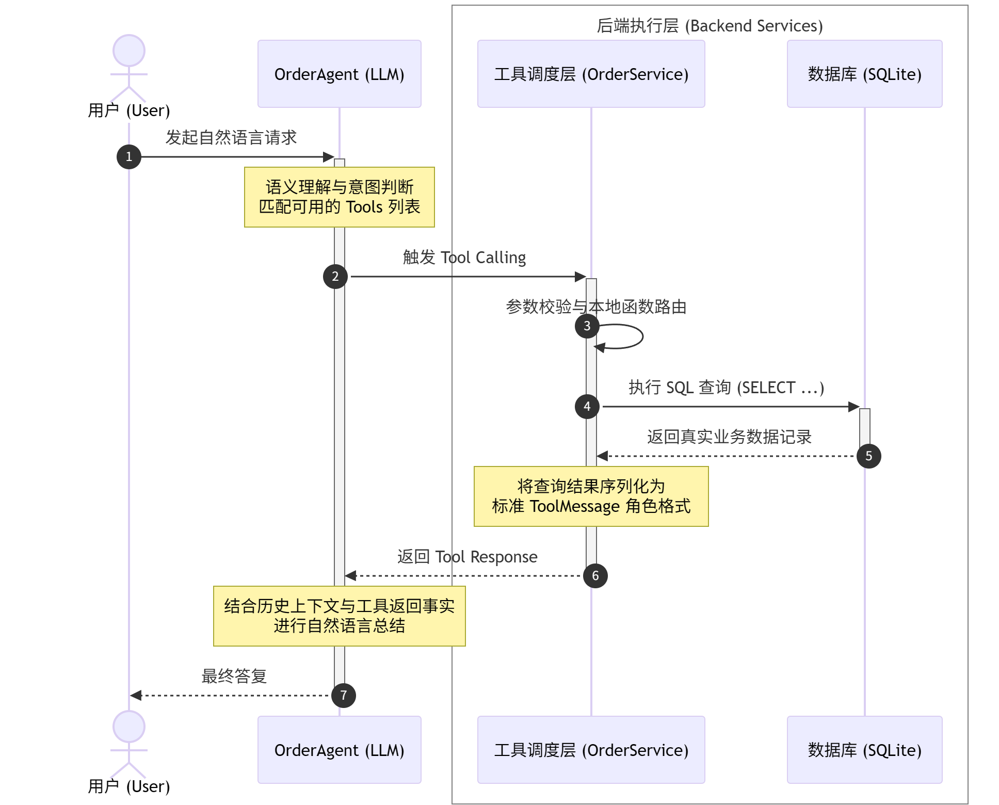
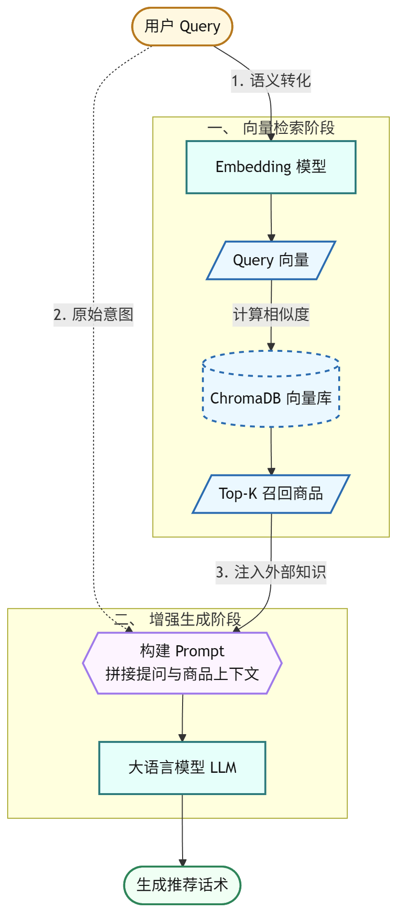
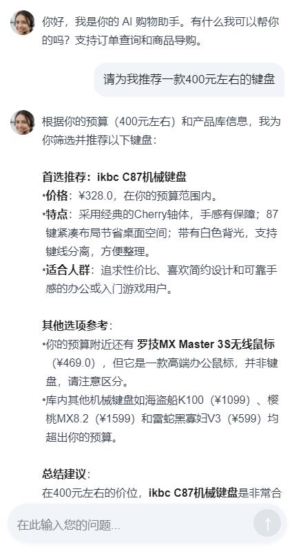

SA
Shop Agent
电商管理客服系统
基于 RAG + Agent + Tool Calling 的课程大作业
汇报目录
Table of Contents
02
核心技术实现
⚙️ 架构 · RAG · Tool Calling · Memory
01 / 项目背景与定位
项目背景与痛点
Why Shop Agent
电商客服现状
- SKU 规模增长，人工客服成本高、响应慢
- 24×7 在线服务难以全人工覆盖
- 标准化问题（订单查询、商品推荐）占比高
LLM 直接应用的挑战
- 没有工具调用，无法访问订单数据库
- 缺少检索增强，无法给出真实商品推荐
- 上下文暴涨，Token 与延迟线性恶化
→ 解决方案
在大模型之上叠加三层能力：Tool Calling 接数据库、RAG 接知识库、Agent Memory 压长上下文。
01 / 项目背景与定位
项目定位与目标
Goal & Scope
项目定位
面向中小型电商的 极简可落地 智能客服雏形，覆盖从 API 到前端的完整链路。
大模型对话
工具调用
检索增强
Agent 记忆
具体目标
- ✅ 基础对话 API（
/api/chat）
- ✅ 工具调用：订单 & 物流查询
- ✅ RAG：基于产品向量库的推荐
- ✅ 意图路由：自动选择合适的 Agent
- ✅ Agent Memory：对话历史压缩
- ✅ 双前端（微信小程序 + Streamlit） + JWT 认证
02 / 核心技术实现
技术栈总览
Tech Stack
DeepSeek API
大模型（OpenAI 兼容）
工程化支撑
启动配置校验
请求日志中间件
速率限制中间件
全局异常处理
psutil 监控端点
02 / 核心技术实现
系统整体架构
Layered Architecture · 四层解耦
① 展示层 Presentation
微信小程序（正式演示）+ Streamlit（开发联调）。
② 接口与网关层 API Gateway
FastAPI REST + 鉴权 / 限流 / 日志中间件，统一入口。
③ 智能业务层 AI & Agent
RouterAgent 统一路由 → OrderAgent · RAGAgent · General LLM，旁挂 AgentMemory 记忆压缩。
④ 数据与持久层 Data
SQLite 存关系型业务数据，ChromaDB 存商品向量库。
02 / 核心技术实现
核心技术（一）Tool Calling
订单查询 Agent · UML 时序
7 步调用流程
- 用户发起自然语言请求
- OrderAgent 判意图、匹配 Tools
- 触发 Tool Calling，参数校验
- OrderService 执行 SQL 查询
- SQLite 返回业务数据
- 结果序列化为 ToolMessage 回喂
- LLM 结合上下文生成最终答复
工具定义（OpenAI 兼容）
tools = [{
"type": "function",
"function": {
"name": "get_order_status",
"description": "查询订单物流状态",
"parameters": { ... order_number ... }
}
}]
02 / 核心技术实现
核心技术（二）RAG 产品推荐
检索增强生成 · 两阶段流程
一、向量检索阶段
用户 Query → Embedding 模型 → Query 向量 → ChromaDB 计算相似度 → 召回 Top-K=5 候选商品。
二、增强生成阶段
Top-K 结果作为外部知识注入 Prompt，与用户原始意图拼接后交由 DeepSeek LLM，生成个性化推荐话术。
数据与依赖
data/products.csv 30 款商品离线入库；Embedding 由 SiliconFlow 提供（OpenAI 兼容接口）。
02 / 核心技术实现
核心技术（三）Router Agent
意图路由
三分类意图识别
order_query
订单 / 物流 / 快递相关
product_rec
商品推荐 / 选购咨询
general
寒暄 / 政策 / 其它
由 router_agent.py 统一调度，决定走 Order / RAG / 通用对话。
调用时序
- 用户消息 + 历史 → Router Agent
- LLM 输出意图标签
- 分发到对应子 Agent 执行
- 统一回包（含
intent 字段）
已识别优化点
额外的意图分类 LLM 调用会增加延迟与成本，已在 to-fix.md 标记，后续可用规则预过滤 + 单次 tool_choice 合并。
02 / 核心技术实现
核心技术（四）Agent Memory 三阶段
上下文压缩
| 指标 | 改进前 | 改进后 | 提升 |
|---|
| 10 轮对话 Token | ~2000 | ~600 | ↓ 70% |
| 30 轮对话 Token | ~6000 | ~1200 | ↓ 80% |
| 平均响应时间 | 2.5s | 1.5s | ↓ 40% |
| API 成本 / 100 对话 | $0.50 | $0.12 | ↓ 76% |
* 数据来源：AGENT_MEMORY_PLAN.md 预期收益表（设计目标，非实测）。阶段 1/2/3 已完成，阶段 4 持久化待完善。
02 / 核心技术实现
数据模型设计
ER Diagram · 四张核心表
users · 用户
用户名 / 邮箱唯一索引，存储 hashed_password；一对多关联 orders。
orders · 订单
订单号、物流单号、收货地址、状态、金额、创建 / 发货 / 送达时间戳。
products · 商品
名称 / 描述 / 类别 / 价格 / 库存，支撑 RAG 向量库同步。
order_items · 订单明细
订单 × 商品多对多桥表，保留下单时的单价与小计，保证历史一致性。
02 / 核心技术实现
系统亮点小结
Highlights
① 分层清晰的架构
API / Agent / Service / Database 四层解耦，模块可独立测试与替换。
② 能力正交的 Agent
Router / Order / RAG 各司其职，扩展新场景只需新增 Agent，不动路由逻辑。
③ 三阶段记忆压缩
Buffer → 场景感知 → LLM 压缩，从规则到智能，预期 Token 大幅下降。
④ 工程化完善
启动配置校验、请求日志、速率限制、JWT 认证、psutil 监控端点，贴近生产。
03 / 功能演示
功能演示（一）登录 & 商品推荐
微信小程序 · 真机截图

登录 / 注册页（JWT 鉴权）

RAG 推荐结果：用户问"推荐 400 元键盘" → 返回 ikbc C87 完整推荐话术
03 / 功能演示
功能演示（二）开发端 & 场景
Streamlit 真实截图 + 三大场景

Streamlit 联调页：左侧登录态 + 后端健康，右侧完整 RAG 对话，带 识别意图 & 使用工具 标签
A · 订单查询（Tool Calling）
"ORD123 到哪了？" → Router → OrderAgent → get_order_status → SQLite。
B · 商品推荐（RAG）
"300 元左右的键盘" → RAGAgent → Top-K → LLM 生成推荐。
C · 多轮压缩（Memory）
早期历史触发 LLM 摘要，Token 占用维持稳定区间。
可视化要点
截图下方的 识别意图 与 使用工具 标签，能直观证明路由分发与工具调用真实发生，而非凭空生成。
04 / 总结与展望
项目总结与后续工作
Summary & Roadmap
✅ 已完成
- FastAPI 完整后端 + 5 个聊天端点
- Tool Calling 订单查询链路
- ChromaDB + SiliconFlow 的 RAG 推荐
- Router Agent 意图路由
- Agent Memory 阶段 1 / 2 / 3
- Streamlit 前端 + JWT 认证
- 微信小程序前端（登录、对话、意图标签）
- 启动配置校验 + 日志/限流中间件
⏳ 后续工作
- Memory 阶段 4：会话持久化（ChatSession 表）
- JWT 签名验证 + 密码 bcrypt/argon2 升级
- 意图分类合并为单次 tool_choice，降低延迟
- 产品数据源（CSV 与 DB）统一同步机制
- 流式响应 / WebSocket 实时聊天
- Dockerfile + 部署脚本 + 测试补全
Q&A
感谢聆听，欢迎提问与指导
谢 谢
项目仓库：Shop-Agent · main 分支